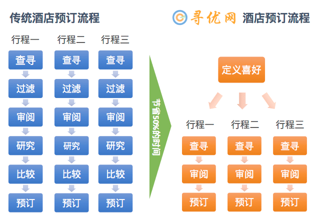

当您使用一个传统的网站搜索某个目的地的酒店时，网站会一下返回几十个结果。您往往搞不清该网站为何如此给酒店排序。您能做的只是一个个地审查这些酒店，打开每一家酒店的详细网页，找到您关心的信息，然后和相近的别的酒店进行比较。进一步您还需要打开另外多家代理商的网站，搜索到同样的酒店，看看谁家价钱最实惠。这样下来，往往几个小时还不够。最让人受不了的是，同样的过程在下一次旅行时还要重复进行。随着移动时代的到来，很多人都想用手机预订酒店。预订酒店本身已不是什么问题，可您能忍受在小小的屏幕上进行上述的排查比较工作吗？ 与传统网站不同，寻优网（Findoptimal.com）会帮您完成这些费时费力的信息收集、酒店过滤和价格比较。作为一个个性化的搜索引擎，寻优网能记住并使用您所有关于酒店类型、星级、品牌、价格范围、便利设施、用户评分等等的选择倾向。这些选择倾向您只需要定义一次。以后就可以让寻优网为您所有的旅行找到满意的酒店了。省时省力，何乐而不为呢？有了寻优网，您还可以放心地使用手机来订酒店，因为需要您大量信息输入的工作已经事先完成了。Travel guide
个性化设置帮您节省一半化在酒店搜索上的时间
开始查询 视频解释 想想您上次计划出行安排酒店化了多少时间？不要不好意思说化了几个小时，因为您绝对不是唯一一个这样做的。预订酒店需要考虑的因素太多了 — 价格、地理位置、服务质量、酒店设施、房间大小、清洁程度、舒适程度、方便程度、环境噪音、窗外风景、早餐、酒吧餐馆、公共交通以及停车设施。由于近年来在线代理网站